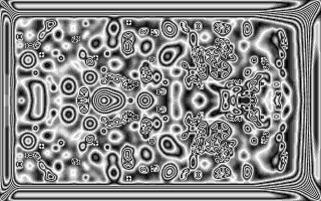
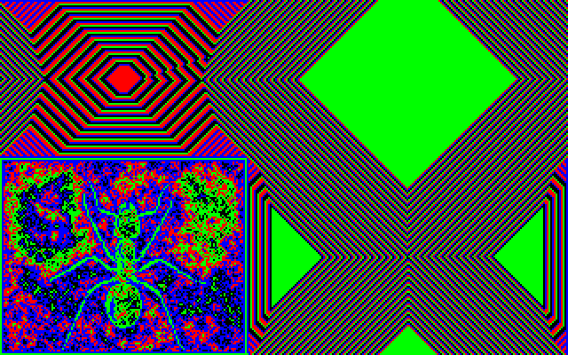
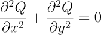

Cellular Automata Laboratory |
|
Cellular automata (CA) are self-generating computer graphics movies. The most important near-term application of cellular automata will be to commercial computer graphics; in five years you won't be able to watch television for an hour without seeing some kind of CA. Three other key applications of cellular automata will be simulation of biological systems (artificial life), simulation of physical phenomena (heat-flow and turbulence), and the design of massively parallel computers.
Most of the programs in the Rudy Rucker Cellular Automata Lab are two-dimensional. In these programs the computer screen is divided into “cells”, which are colored rectangles or dots. Each cell is repeatedly “updated” by changing its color to a new color. The net effect of the individual updates is that you see an ever-evolving sequence of screens. A graphics program of this nature is specifically called a cellular automaton when it is 1) parallel, 2) local, and 3) homogeneous.
(1) Parallelism means that the individual cell updates are performed independently. That is, we think of all of the updates being done at once. (Strictly speaking, your computer only updates one cell at a time, but we use a buffer to store the new cell values until a whole screen's worth has been computed to refresh the display.)
(2) Locality means that when a cell is updated, its new color value is based solely on the old color values of the cell and of its nearest neighbors.
(3) Homogeneity means that all cells are updated according to the same rules. Typically the color values of the cell and of its nearest eight neighbors are combined according to some logico-algebraic formula, or are used to locate an entry in a preset lookup table.
Cellular automata can act as good models for physical, biological and sociological phenomena because each person, or cell, or small region of space “updates” itself independently (parallelism), basing its new state on the appearance of its immediate surroundings (locality) and on some generally shared laws of change (homogeneity).
As a simple example of a physical CA, imagine sitting at the edge of a swimming pool, stirring the water with your feet. Notice how quickly the pool's surface is updated. The “computation” is so fast because it is parallel: all the water molecules are computing at once. And how does a molecule compute? It reacts to forces from its neighbors (locality), in accordance with the laws of physics (homogeneity).

The Rug rule with the Bleach color palette. Pattern was evolved from blank screen in Open mode, with full symmetry broken by a short burst of scrolling the map with the arrow keys.
CelLab consists of a high-performance cellular automata simulator, WebCA, which runs in your Web browser (a modern browser that supports HTML5 and JavaScript is required), a collection of pre-defined rules, patterns, and color palettes which let you perform a variety of experiments with cellular automata, and tools that allow you to invent and test your own rules, using either the JavaScript language built into your Web browser or a Java language development environment installed on your computer. Instructions and tools for creating custom patterns, color palettes, user evaluators (which allow extending the environments WebCA can simulate), and scripted demonstrations are available.
Rudy Rucker, the author of thirty books of science-fiction, popular science and mathematics, and computing, is Professor Emeritus of Mathematics and Computer Science at San Jose State University. John Walker is founder and former president of Autodesk, Inc. Autodesk's best-known product is a computer-aided design (CAD) graphics program called AutoCAD.
To give an overview of the kinds of things you'll see as you explore the world of cellular automata, you might start out by viewing a completely automatic demonstration of the various rules we'll be discussing, run in WebCA.
The demo shows you a festival of one-act cellular automata plays. In each case, you are watching an actual rule running; you are not watching a prerecorded movie or series of slides. The individual rules are described in detail later in this manual. The demo is an example of a WebCA “show”. Later, you'll learn how to create your own shows.
How can you take over the control of WebCA for yourself? Launch WebCA in a Web browser window. It's best if you open it in a new window so you can use it while you work through this document. Now, to load a rule, click the drop-down list on the “Rule URL” line below the map display. Choose one of the standard rules—let's start with “Brain”. Press the “Start” button to set the rule running. You can flip back and forth between running and pausing by pressing the button, or run the rule one generation at a time by pressing “Step” repeatedly.
I think it's safe to say that WebCA is the fastest all-software high-resolution cellular automaton simulator in existence. Notice all the little creaturelets crawling around in Brain. WebCA's Brain is a digital antfarm. While Brain is running, try rerandomizing the screen by pressing the “Random” button in the “Pattern” line. Then pause the simulation and try loading a pattern from the drop-down list in the “Pattern URL” line. How about Bigant? The pattern will appear and then be deconstructed by the running Brain rule when you press “Start”
You should see the Brain rule eat the cyberspace ant. If you don't like the “Bigant”, you can use Tim Leary's face, stored as “Tim”. Since Brain wipes patterns out so quickly, let's try loading a different rule with a pattern. Let's feed Tim to Vote, to smooth him out, and then let's give him to Votedna to fatten up his contours.
Pause the simulation, then choose the Tim pattern from the drop-down list on the “Pattern URL” line. Now use the drop-down list on the “Rule URL” line to select the “Vote” rule. Press “Start”, let it run for a short while, then press “Pause” (the same button). Now choose the “VoteDNA” rule from the Rule drop-down list and press “Start” to resume.
VoteDNA is a nice rule. Press the “Random” button and watch how it makes strings out of random crud. Pause the simulation again, randomize one more time, and load the “Hodge” rule. Then bring back the Tim pattern and watch him turn into living paisley.
For a last demo, load another rule, the “reversible” rule called TimeTun. TimeTun starts with a standard pattern (another ant—what is it with these guys and ants, anyway?).
To apply the rule to the pattern for a single step, press “Step”. The pattern will change, growing outward and becoming more colorful. Press “Step” a few more times and observe the growth. Now let the automaton run on its own by pressing “Start”.
Before long the screen will look less like a hard-edged computer display and more like something from the 1960's, usually generated without recourse to computer hardware. Now press the “Swap” button below the “Pattern URL” line. Watch it run for awhile and something truly remarkable will happen.

The TimeTun rule after 195 generations.
Go ahead and try a variety of rules and patterns. All of the rules from the demo are here. One thing to keep in mind is that many of our demo rules will forcibly load a standard startup pattern, so if you want to give them a different pattern, you have to load the pattern after the rule.
The remarkable thing about CAs is their ability to produce interesting and logically deep patterns on the basis of very simply stated preconditions. Just as the Mandelbrot set arises from the repeated iteration of the simple equation Z = Z² + C, iterating the steps of a CA computation can produce fabulously rich output. A good CA is like an acorn which grows an oak tree, or more accurately, a good CA is like the DNA inside the acorn, busily orchestrating the protein nanotechnology that builds the tree.
I feel that science's greatest task in the late twentieth century is to build living machines: intelligent artificial life, known as a-life for short. In Cambridge, Los Alamos, Silicon Valley and beyond, this is the computer scientist's Great Work as surely as the building of the Nôtre Dame cathedral on the Ile de France was the Great Work of the medieval artisan.
There are two approaches to the problem of creating a-life: the top/down approach, and the bottom/up approach.
The top/down approach is associated with AI (artificial intelligence), the bottom/up with CA (the study of cellular automata). Both approaches are needed for intelligent artificial life, and I predict that someday soon chaos theory, neural nets and fractal mathematics will provide a bridge between the two. What a day that will be when our machines begin to live and speak and breed—a day like May 10, 1869, when the final golden spike completed the U.S. transcontinental railroad! The study of CAs brings us ever closer to the forging of that last golden link in the great chain between bottom and beyond. If all goes well, many of us will see live robot boppers on the Moon.
A heckler might say, “Sure that's fine, but why are CAs needed? Why have a bottom/up approach at all? What do mindless colored dots have to do with intelligent artificial life?”
For all humanity's spiritual pretensions, we need matter to live on. And CAs can act as the “matter” on which intelligent life can evolve. CAs provide a lively, chaotic substrate capable of supporting the most diverse emergent behaviors. Indeed, it is at least possible that human life itself is quite literally based on CAs.
How so? View a person as wetware: as a protein factory. The proteins flip about like John Holland's genetic programs or like A. K. Dewdney's flibs; generating hormones, storing memories. Looking deeper, observe that the proteins' nanotech churning is a pattern made up of flows and undulations in the potential surfaces of quantum chemistry. These surfaces “smell out“ minimal energy configurations by using the fine fuzz of physical vacuum noise—far from being like smooth rubber sheets, they are like pocked ocean swells in a rainstorm. The quantum noise obeys local rules that are quite mathematical; and these rules are in fact very well simulated by CAs.
Why is it that CAs are so good at simulating physics? Because, just as in physics, cellular automaton computations are i) parallel, ii) local, and iii) homogeneous. In both physics and in CAs, i) the world is happening in many different places at once, ii) there is no action at a distance, and iii) the laws of nature are the same everywhere.
Whether or not the physical world really is a cellular automaton, the point is that CAs are rich enough that a “biological” world could live on them. We human hackers live on language games on biology on chemistry on physics on mathematics on-something very like the iterated parallel computations of a CA. Life needs something to live on, intelligence needs something to think on, and it is this seething information matrix which CAs can provide. If AI is the surfer, CA is the sea.
That's why I think cellular automata are interesting: A-life! CAs will lead to intelligent artificial life!
Rudimentary CA a-life already exists in the form of Brain's haulers, Vote's oscillators, and such classic Life patterns as Gosper's glider gun.
In the 1970s, Berlenkamp, Conway, and Guy proved that putting a lot of these objects together can make a universal serial computer, such as a PC. Any serial computation can be done by a CA, and any CA computation can in turn be done by a serial computer—in support of this last point, note that all of our programs are serial programs written in JavaScript or Java.
Many computations can be done much more rapidly and efficiently by a succession of massively parallel CA steps. And one does best to use the CA intrinsically, rather than simply using it as a simulation of the old serial mode—emulating an Intel chip by using a galaxy-sized array of blocks and glider guns is not the way to go. No, when we use CAs best, we do not use them as limpware animations of circuit diagrams. While behaviors can be found in top-down expert-system style by harnessing particular patterns to particular purposes, I think by far the more fruitful course is to use the bottom/up freestyle surfing CA style summed up in the slogan:
Seek Ye The Gnarl!
New dimensional CA hacks are possible, new and marketable techniques of parallel programming are lying around waiting to be found, both in the form of individual CA structures and in the form of wholly different rules.
CA structures are labile and breedable in three senses: one can collide and interface different local patterns within the framework of a fixed CA rule, one can combine globally different CA rules (or ideas about them) to produce wholly new ecologies, or one can “gene-splice” the logic of successful rules. Then, like Alexander von Humboldt in the Americas, one botanizes and zoologizes and mineralizes, looking for whatever artificially alive information structures can be found in the new worlds. As always both top/down and bottom/up approaches are viable. We use bottom/up to find new ecologies and their flora and fauna. We use top/down to seed a given instance of a particular ecology with the sort of gene-tailored computer agents we want to breed.
In my own bottom/up searches I begin simply by hoping that my programs will display interesting output for a long time. Then I begin to hope that my programs will be robust under varying initial conditions, and that they will be reactive in anthropomorphizable ways. Once the program is, at this very rudimentary level, artificially alive, I may cast about for applications in some practical domain.
I think the most productive near-term applications of CAs are to image generation and image processing. A cycle or two of Vote, for instance, can be used for easy image cleanup, munching down all stray “turd bits”. This technique, known as “convolution” in the literature, is used every day by NASA's massively parallel computer in Beltsville, Maryland, to process terabyte arrays of satellite photo data. Present-day designers of the newest commercial paint and graphics packages for the VGA will be putting CA rules into their image processor toolboxes. (Look, for instance, at what Border does to Dr. Tim's face.)
In the area of original image generation, I predict that one of the next big commercial computer graphics fads will be CAs. How about a logo that instead of being chrome is matte and luminous, with a smooth curved surface made of tiny moving mosaics of light, lightbits that form the crawling dirty haulers of Brain or the psychedelic shudder of Rug? These are what the expressive “flickercladding” skins of the robots look like in my a-life science fiction novels, Software and Wetware.
Many simulation applications exist as well. The idea is to find a CA rule that looks like something you want to model. If you are lucky there will be some common underlying mathematics between the two. The Rug rules, for instance, are difference method solutions of the same differential equation, the Laplacian heat equation:

This means, e.g., that a fine-grained Rug rule inside a fixed circular boundary set may serve as a viable model of a vibrating drumhead!
A last current application of CAs is to encryption. Either a CA can serve as a cheap source of “essentially random” encryption bits, or the whole message can be fed to a reversible CA. Stephen Wolfram claims actually to have patented the one-dimensional rule with Wolfram code #30 as part of an encryption scheme.
But to recapitulate, the real reason for studying CAs is to promote artificial life. The most important use for cellular automata will be as “universes” or “arenas” in which to evolve better fractals, flibs, core-warriors, neural nets and expert agents, using gene-splicing, mutation, and our own “divine interventions” to achieve a rapid and dramatic evolution in these parallel processes. CA workers need your help in accomplishing the manifest destiny of mankind: to pass the torch of life and intelligence on to the computer. There are no more than a few hundred active workers in the CA field today twenty-first century technology will need thousands more!
Physics is local. The two great pillars of Twentieth Century science, general relativity and quantum mechanics, can be viewed as supplanting the mysticism of “action at a distance” and “force fields,” by such mundane, self-evident, and intuitive mechanisms as the Riemann curvature tensor, virtual gluons, and the Higgs field. Both of these theories describing the universe in the large and the very small (albeit in mathematically incompatible ways), tell us that all the complex fabric of events we observe are consequences of individual particles locally responding to conditions directly affecting them, whether moving along geodesics in curved spacetime or undergoing interactions through particle exchange. Both theories have withstood all experimental tests to date, including many thought impossible when they were originally propounded.
A cellular automaton (CA) is a mechanism for modeling systems with local interactions. A cellular automaton is a regular lattice of cells with local state, which interact with their neighbors subject to a uniform rule which governs all cells. The neighborhood (the set of cells whose state can affect a given cell at one instant) can be classified by the dimensionality of the automaton (most experimentation is done with one- or two-dimensional automata), and by the geometric fashion in which cells are interconnected.
The rule is the “program” that governs the behavior of the system. All cells apply the rule, over and over, and it is the recursive application of the rule that leads to the remarkable behavior exhibited by many cellular automata. When experimenting with cellular automata, one is primarily engaged in defining new rules which lead to interesting or useful behavior. CelLab provides tools for the person engaged in such experiments. It allows you to create a rich set of rules and experiment with their behavior without requiring the purchase of expensive special-purpose hardware.
Cellular automata appear to be abstract and devoid of practical applications, much as was said of computer graphics not long ago. If you want to model a universe which seems to be made up of particles which interact locally, there are two basic ways to go about it. The first is to create a huge array of numbers that represents the interacting items, then find the biggest number cruncher you can lay your hands on and set it gnawing away at the problem. The supercomputer boom, fueled by applications of this approach to weather prediction, computational fluid dynamics in the transonic and hypersonic regimes, plasma dynamics, and an almost endless list of other applications testifies to the effectiveness of this approach.
But maybe there's another way. Until recently, cellular automata were primarily a theoretical tool. The price of a cellular automaton with uniform edge size increases as the nth power of its size, where n is the dimensionality of the cellular automaton. This gets out of hand rapidly, even if you're only working with two dimensional cellular automata. Therefore, although they may be the way the universe is really assembled and therefore worthy of study, no one would consider building one!
Hardware realizations of cellular automata, such as the CAM-6 board, have been built. The CAM-6 is not a true cellular system; it emulates one by using a fast RAM array and a look-up table, but it permits exploration of a rich set of cellular automata with performance adequate to study their behavior in detail. The CAM-6 is a highly effective tool, but it is, at $1,500, an expensive one. It's priced out of the reach of many creative people who should be exploring cellular automata. It was the desire to make cellular automata experimentation available at a low price to a large number of people that spurred the development of this product.
For cellular automata need only to find a concrete, compelling application to a real-world problem to burst into silicon and totally change the way we think about computing. Consider this: inside the computer you're using now are ranks and ranks of RAM chips. A 256K×1 static RAM chip has a memory cell consisting of four to six transistors, connected in rows and columns to circuitry on the periphery of the chip. Even when the computer is running flat-out, you're using precisely one cell at a time. This is the classic bottleneck in the von Neumann computer architecture (John von Neumann was very aware of this problem; in fact, he and Stanislaw Ulam invented cellular automata precisely as a tool for modeling complex systems), which has led to proposals such as Backus' functional programming, neural systems, and many other architectural proposals, such as SIMD machines, which seem to be more effective in generating Ph.D.s than numbers.
If a two-dimensional cellular automaton with 256K cells were realized in silicon, it could compute 262,144 times faster than a serial processor accessing data bit-by-bit from a memory array. Yet, engineered for volume production, made in comparable volumes, and given time to slide down the learning curve, it need cost no more than a RAM chip. This is the potential of cellular automata. The beauty of two-dimensional cellular automata is that they map perfectly into our semiconductor manufacturing technology: they need the things it does best as opposed to, say, neural systems where the number of connections exceeds the capability of two layers of metal.
If there is merit in Edward Fredkin's suggestion that the fine-grained structure of the universe is really a cellular automaton, then cellular automata machines will play the role of particle accelerators in exploring this level of reality.
Some of the brightest minds of our century have been involved with cellular automata because they comprehended what cellular automata can do. John von Neumann, Stanislaw Ulam, John Horton Conway, Stephen Wolfram, and Edward Fredkin do not spend their time on nonsense. With the Rudy Rucker CelLab, you can begin to explore the potential that attracted those men to create and research this new way to compute. And perhaps you will discover something that will add your name to the list.
There's plenty to discover. CelLab lets you program 256216 distinct CA rules, which is a number larger than 10157,826. These numbers are “effectively infinite”. Roughly 1017 seconds are thought to have elapsed since the big bang ushered in the universe. If you had been around since then, creating, testing, and evaluating one rule per second, you still wouldn't have made a dent in this number, any more than a buck makes a dent in a trillion dollars. Take away one dollar and you still have about a trillion. Even with enough time, you'd have a lot of trouble writing down the results of your exhaustive search for rules, as the universe is believed only to have on the order of 1080 particles in it, so you'd run out of places to make notes even if you turned the entire universe into a cosmic all-encompassing Post-it® note. If the still-unconfirmed Grand Unified Theories are correct, by the time 1040 seconds have passed, more than half of the protons will have evaporated into little poofs of energy and leptons, taking with them the fruits of your labors, and leaving what's left of you with 10157,826 bottles of beer still on the wall.
So get started, people! The human mind works a lot better than blind search (one imagines a middle manager reporting, “Nothing much yet—we need more monkeys, more typewriters.”). CelLab unleashes your creativity in a virtually infinite domain, where your discoveries may be not only interesting or rewarding, but may create a whole new world. The challenges in cellular automata are clear: how to realize them in hardware, how to apply them to useful tasks, and how to make money doing it. You now possess a tool for exploring all three.
The main applications of cellular automata are to:
To give a flavor of some of the recent work, this section lists a few references in addition to the ones which appear in our main bibliography at the end of the book.
A. Appel and A. J. Stein, “Cellular Automata for Mixing Colors”, IBM Tech. Disc. Bull. 24, 1981, p. 2032.
M. Meriaux, “A Cellular Architecture for Image Synthesis”, Microprocessors and Microprogramming 13, 1984, p. 179.
K. Preston, “Basics of Cellular Logic with Some Applications in Medical Image Processing”, Proc. IEEE 67, 1979, p. 826.
A. Rosenfeld, “Parallel Image Processing Using Cellular Arrays”, Computer 16, 1983, p. 14.
G. Cocho, G. Perez-Pascual, J. Ruis, & F. Soto, “Discrete Systems, Cell-Cell Interactions, and the Color Patterns of Animals”, J. Theor. Biol. 125, 1987, p. 437.
I. Dayan, D. Stauffer, & S. Havlin, “Cellular Automata Generalization of the Weisbuch-Atlan Model for Immune Response”, J. Phys. A, Math. Gen. (UC) Vol. 21, No. 10, May 1988, p. 2473.
W. Duchting and T. Vogelsaenger, “Aspects of Modelling and Simulating Tumor Growth and Treatment”, J. Cancer Res. Clin. Oncology 105, 1983, p. 1.
T. Kitagawa, “Cell Space Approaches in Biomathematics”, Math. Biosciences 19, 1974, p. 27.
M. Kumura & G. Weiss, “The Stepping Stone Model of Population Structure and the Decrease of Genetic Correlation with Distance”, Genetics 49, 1964, p. 561.
M. Mainster, “Cellular Automata: Retinal Cells, Circulation, and Patterns”, Eye 6, 1992, p. 420.
L. Sander, “Fractal Growth Processes”, Nature 322, 1986, p. 789.
J. Vincent, “Cellular Automata: A Model for the Formation of Color Patterns in Molluscs”, J. Molluscan Stud. 52, 1986, p. 97.
D. Young, “A Local Activator-Inhibitor Model of Vertebrate Skin Patterns”, Math. Biosciences 72, 1984, p. 51. ¹
C. Burks & D. Farmer, “Towards modelling DNA sequences as automata”, Physica D, V. 10, No. 1–2, 1984, p. 157.
J. Greenberg and S. Hastings, “Spatial Patterns for Discrete Models of Diffusion in Excitable Media”, SIAM J. Appl. Math. 34, 1978, p. 515.
Y. Oono & M Kohmoto, “A Discrete Model of Chemical Turbulence”, Phys. Rev. Lett. 55, 1985, p. 2927. ¹
B. Chopard, and M. Droz, “Cellular Automata Model for Heat Conduction in a Fluid”, Phys. Lett. A (Netherlands) V. 126, No. 8–9, January 1988, p. 476.
M. Colvin, D. Frenkel, & A. Ladd, “Application of Lattice-Gas Cellular Automata to the Brownian Motion of Solids in Suspension”, Phys. Rev. Lett. V. 60, No. 11, 1988, p. 975.
M. Creutz, “Deterministic Ising Dynamics”, Ann. Phys. 67 (1986), p. 62. ¹
G. Doolen & D. Montgomery, “Magnetohydrodynamic Cellular Automata”, Phys. Lett. A, V. 120, No. 5, 1987, p. 229.
U. Frish, B. Hasslacher and Y. Pomeau, “Lattice Gas Automata for the Navier-Stokes Equation”, Phys. Rev. Lett. 56, 1986, p. 1505. ¹
H. Gerola & P. Seiden, “Stochastic Star Formation and Spiral Structure of Galaxies“, Astrophys. J. 223, 1978, p. 129.
U. Frisch, D. d'Humieres, B. Hasslacher, P. Lallemand, P. Pomeau, & J. Rivet, “Lattice gas hydrodynamics in two and three dimensions”, Complex Systems, 1987, p. 649.
N. Packard, “Lattice models for solidification and aggregation”, Proc. First International Symposium for Science on Form, Tsukuba, Japan, 1986. ¹
J. Park, K. Steiglitz and W. Thruston, “Soliton-like Behavior in Automata”, Physica D 19, 1986. ¹
G. Vichniac, “Simulating physics with cellular automata”, Physica D 10, 1984, p. 96.
P. Guan, “Cellular automaton public-key cryptosystem”, Complex Systems 1, 1987, p. 51.
D. Hillis, “The Connection Machine: A Computer Architecture Based on Cellular Automata”, Physica D 10, 1984, p. 213.
T. Hogg & B. Huberman, “Parallel Computing Structures Capable of Flexible Associations and Recognition of Fuzzy Inputs”, J. Stat. Phys., 1986.
S. Kirkpatrick, C. Gelatt, & M. Vecchi, “Optimization by Simulated Annealing”, Science 220, 1983, p. 671.
R. Minnick, “A Survey of Microcellular Research”, J. ACM 14, 1967, p. 203.
J. Taboury, J. Wang, P. Chavel, F. Devos, & P. Garda, “Optical Cellular Processor Architecture”, Appl. Opt. Vol. 27, No. 9, May 1988, p. 1643.
¹ Marked references are all reprinted in Theory and Applications of Cellular Automata, edited by Stephen Wolfram, ISBN 978-997-1501-23-5.
Researchers should also be aware of the quarterly journal Complex Systems, which carries many articles about cellular automata. The address of Complex Systems is P.O. Box 6149, Champaign, IL 61826, USA.